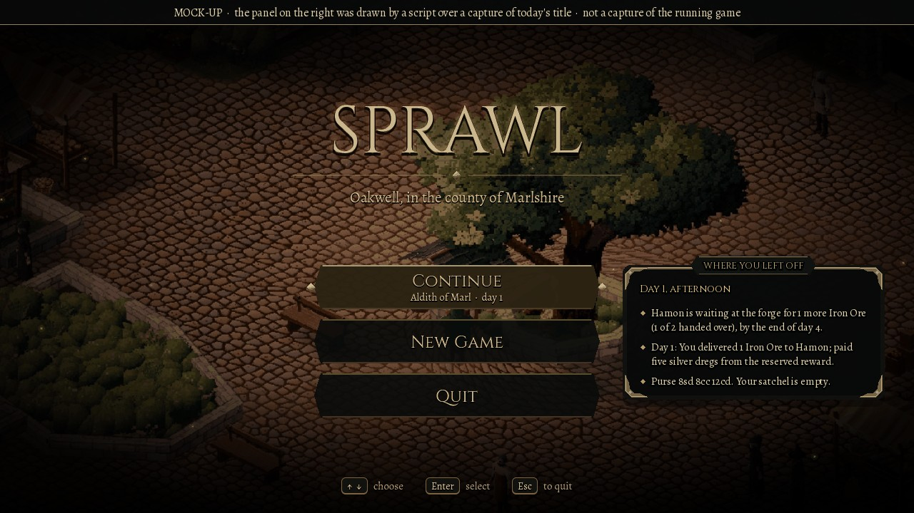
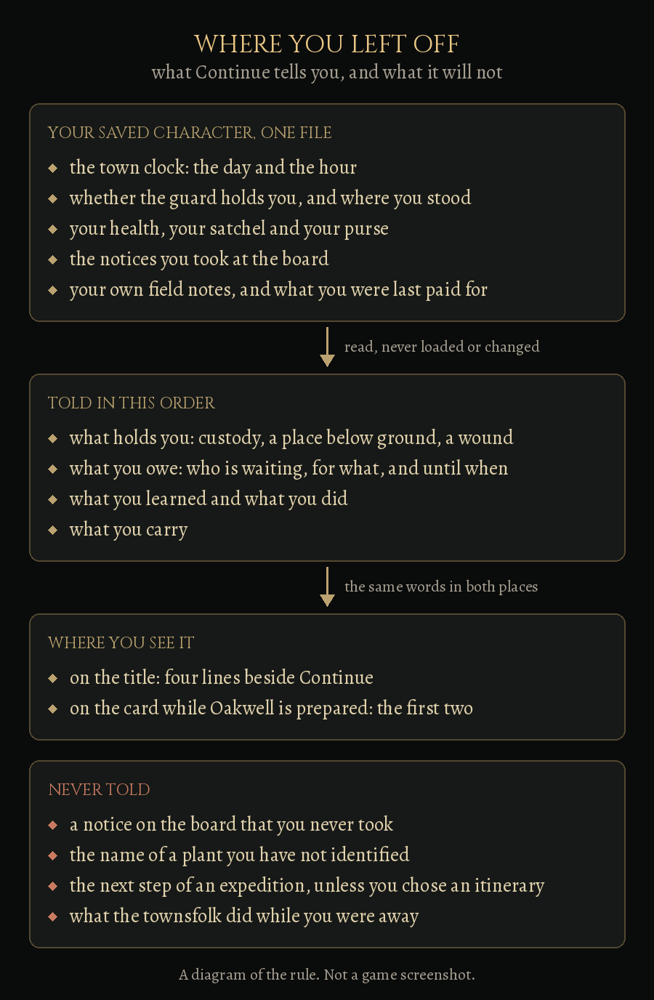

14 November 2026
Where you left off
Continue now tells you what it is continuing: who is waiting on you, what you were last paid for and what you are carrying, in a few lines beside the button.
A first playable demo of Sprawl will not be played in one sitting. Someone will try it for twenty minutes, close it, and come back two days later. The plan for that demo asks for a save you can trust and a player who can tell what to do next. The save has had a great deal of care. The second part had a gap right at the front door.
This is the title as it stands today. Continue names the character and the day they had reached. It says nothing of what they were in the middle of.

Day 1 could mean you had only just walked into the square. It could also mean you had taken the smith's notice, handed over half the ore and were on your way to find the rest. From the title you could not tell which, and after two days away you might not remember either.
A few lines beside Continue
The title now reads the saved character before loading it and sets out where that life stands, in plain sentences, in a panel beside the menu.

That picture is a mock-up, and it says so across its top. The panel was drawn by a script over a capture of the present title, using the game's own lettering and the measurements in its code. It has not yet been captured in the running game, and the first real capture will replace it.
The words are not mocked. They are what the game's own code produces for a real save: a first day in Oakwell on which the traveller took Hamon's notice at the board, brought him one of the two pieces of iron ore he needs, and stopped. The panel says who is still waiting and where, how much is left, and the day the notice runs out. It repeats the last thing the town paid you for, in the same words your journal used. It ends with your purse and your satchel.
If you already hold what somebody is waiting for, it says so. A line that ends with the words you carry exactly that is the game telling you the errand is nearly done.
With no work in hand, the panel says that too, and reminds you that notices go up on the board in the square. A new game has nothing to tell, so there is no panel at all.
The most pressing thing first
The lines always come in the same order. First, anything that holds you: being kept by the guard after an assault, having stopped somewhere below ground such as the mausoleum or the Fernfall Deeps, or being hurt. Then what you owe, which is work you took and have not finished. Then what you learned and what you did. What you carry comes last.
The title has room for four lines. The first two also appear on the card that stands in front of Oakwell while the town is prepared, beneath the name of whoever is returning. So the reminder is there once when you choose, and again while you wait.
What it will not tell you
Sprawl tries hard never to tell you something your character has not found out. The reminder keeps to that.
- A notice on the board that you never took is not mentioned, however useful it would be.
- A plant you gathered and have not identified is counted and never named.
- Your field notes are repeated as far as you took them. Reddish grit that nobody has identified stays a guess.
- The next step of an expedition is told only if you chose to keep an itinerary, and then in the itinerary's own words.
- What the townsfolk have been thinking or doing while you were away is not told at all.

That last list matters for testing as much as for play. Part of what the first playtests will ask is whether a player can work out a next step for themselves. A reminder that quietly handed over the answer would spoil the question.
Reading without touching
Looking is not loading. The reminder reads the saved file and changes nothing in it. It grants nothing, starts nothing and moves no clock. If one part of the file cannot be read, that part is left out and the rest is still told. If the file cannot be read at all, there is no panel, and Continue behaves exactly as it did before.
Names in the file are treated with suspicion. Each is cut to a sensible length and kept to one line before it reaches the screen.
How far this has been checked
The reading itself is well tested without the game engine. It was run against saves written by the game's own town: the smith's real first-day order, taken and part delivered, and a hunt taken up after a wolf harmed a real flock. It was also run against two character files that the running game saved during earlier work, one of them stopped inside the mausoleum.
The part you see has not been run yet. The panel and the card lines are written and carry their own checks for the automated title run, but that run needs the game engine, which was not available where this was made. Until it passes and a real capture is taken, treat the picture above as a drawing of the intent.
After that, the useful test is a human one: close the game in the middle of an errand, come back the next day, and see whether four lines are enough to pick it up again.